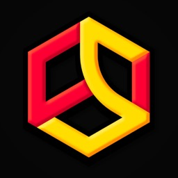

סלטיז
ראשים
בחר את הקלף שיילחם בשבילך
אני
—
VS
יריב
—
אגדי
אדיר
נדיר
רגיל
‹ חזרה

סלטיז ראשים
בחר מצב משחק
👥
רב משתתפים
1 על 1 עם חבר · קישור או קוד
🔥 אונליין
🏆
שחקן יחיד
45 אלופים · שלב 1
⭐ ארקייד
🔗 צור קישור
הצטרף לקוד
‹ חזרה
בחר אלוף
🏆
0 / 45
אתה
—
שלב 1
VS
—
—
אלוף
▲
▼
—
1 / 45
‹ חזרה
חדר פרטי
הקוד שלך
····
העתק קישור
הכנס קוד חבר
הצטרף
שלח את הקישור לחבר
מוכן
1:00
0
0
◀
▶
קפיצה
בעיטה
POWER
גרור כפתור להזזה · משוך את הפינה לשינוי גודל
שקיפות
איפוס
ביטול
שמירה
⚙
🔊
✕
עוד פעם
קלפים